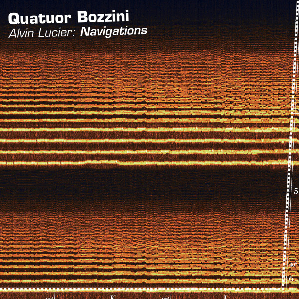

Christina Kubisch - Sechs Spiegel
Sechs Spiegel
将艺术与自然融合，将构造性的形式系统与语言融合的分析方法，可以追溯到未来主义流派艺术的发展历史。在包豪斯学派中，奥斯卡·施莱默特别关注有机功能的三维特性本身是看不见的，比如心跳、血液循环、呼吸、脑和神经系统在立方抽象空间中的活动。后来，约瑟夫·包伊斯将耳朵称为雕塑的知觉器官。埃兹拉·庞德在一篇关于未来主义音乐家乔治·安塞尔(George Antheil)的文章中写道：“另一种审美目标是以迫切性引导意识朝着某种明确的形式或某一特定的节奏，让人们重新意识到除了这种形式，所有其他可能的形式、节奏、周围的表面和物质的存在”。
在萨尔布吕肯的路德维希教堂的作品"after image"，Kubisch探讨了该教堂在1944年遭受轰炸后所经历的内部空间的重建。这座新教教堂建筑属于晚期巴洛克风格，与天主教反宗教改革时期的神圣建筑差别巨大。虽然室内建筑轻盈，但大面积的白色却给人一种冷静而克制印象。立方体的主教堂是十字形平面图的几何中心，由等边三角形组成的12角星形勾勒出来。Kubisch以此为灵感，她将位于风琴楼护栏上的六个基座（三个在讲道台左侧，三个在右侧）改为一种基于毕达哥拉斯数字关系的新的空间语言的“三角形”，对应着光和夜这两个同样具有毕达哥拉斯基本对立关系的概念。Kubisch同时也借鉴了赫拉克利特的思想，作为最早的Fluxus流派艺术家，她认为肉体与内在的关系中，存在着“世界的本质”。Kubisch用一种光敏颜料处理石板，覆盖了六个基座的所谓（盲）“镜子”。通过隐藏的黑光，这些倒置的镜子开始发光。随着天色渐亮，首先暴露出古老石头的地形、半透明的表面结构，然后然后在一种超越性的维度上打开成窗户。它们实际上是反射的图像，就像电子屏幕一样发射出光。
每一块石头都讲述着自己的故事，反映着它古老的形象。由于振动每一面镜子都会发出不同的声音，对应着Stengel的空间语言，形式和频率略有不同，编织成极简主义的声音在空间反射。悬浮在空间的相交轴线上，就像伸展着的音乐厅一样。这些原始的声音，是由手指沿着装满液体的玻璃杯边缘摩擦产生的。根据罗兰·巴特在 "音乐的身体 "一章中的说法,塑料的和不安的，塑料的和平静的,亲密而不冲动的,——最早用这种‘个人化’表达方式取代意大利语中对音乐演奏的标准说明的作曲家之一”。
Christina Kubisch在萨尔布吕肯的项目试图用用以回应“这个空间与历史之间不和谐的关系”，通过“古老的石板、不可理解的光学现象、以及不稳定且无法定义的玻璃声音的形式和频率，回应这个空间与历史之间的不协调关系”来使神圣空间的“第二本性”（按照康德的说法）同时可以被听到和可以被看见。
Studies
(Quatuor Bozzini) Navigations
我非常喜欢Quatuor Bozzini的《Disappearances》。四重奏的指挥Clemens Merkel 在一场音乐会中说：
在《Disappearances》中，四位弦乐手在音调上做了细微的调整，导致泛音出现和消失。从齐声开始，演奏家们维持一个长的齐声音。当他们这样做的时候，他们就会意识到由彼此对同声音的加强所产生的更高的准音。在任何时候，任何一个演奏者决定不自觉地提高或降低她的音调，导致可听的节拍出现。在她之后，另一位选手也会做同样的动作。当合音被降低到一定程度时，较高的准音就会消失。然后，演奏者不知不觉地移动到另一个音高上的合音，导致一组新的准音出现。这个过程可以重复若干次。这部作品是专门为卫斯理大学弦乐四重奏的学生创作的，并由他们于1994年10月20日在卫斯理大学Crowell厅首次演出，作为Alvin Lucier: Collaborations Festival的一部分。
对节拍的利用是实验音乐作曲家的最爱。这个传统从Xenakis开始，但现在，2023年，它已经不是一个新技术了。然而，Lucier的作品总是奇怪而有趣的。这就是重点，声音是奇怪的有趣，但我们(或我)不知道为什么它是有趣的。当听到一个特定的声音时，什么被刺激了？它可能不是与纯音乐有关的东西，应该是一些合成的东西。在声音产生的方式和声音本身听起来的对应关系中，有一些东西可以打动听众，就像毕达哥拉斯学说中的音乐和谐与Harmonices Mundi的对应关系一样，打动人们。一些数学上的东西，同时也是哥德式意义上的生物--因此也是宇宙的。
现在有太多实验音乐，但确实没有关于如何组织这些具有不同特点的声音的一个美学理论，能够同时考虑到声波的数学和现代物理，赋予他们意义，并将它们组织成一个统一的美学理论，因此，真正关键的是一个形而上学的宇宙观，一个能够生成精神和道德的秩序，人类的思想因此可以折叠和展开。
我们必须承认，即使经过两百年的探索，如今的实验音乐所能带来的奇迹和启示与贝多芬的《总赋格》(Grosse Fugue )不能相提并论。正如Alvin Lucier自己写的那样、
二十世纪的弦乐四重奏始于贝多芬的《总赋格》，Opus 133.(Alvin Lucier, Music 109, Notes on Experimental Music)